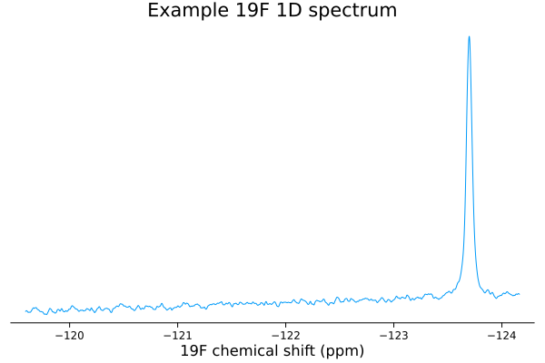
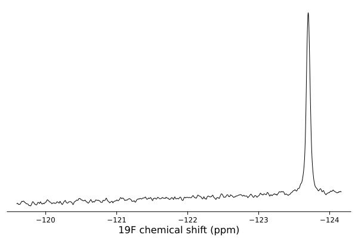
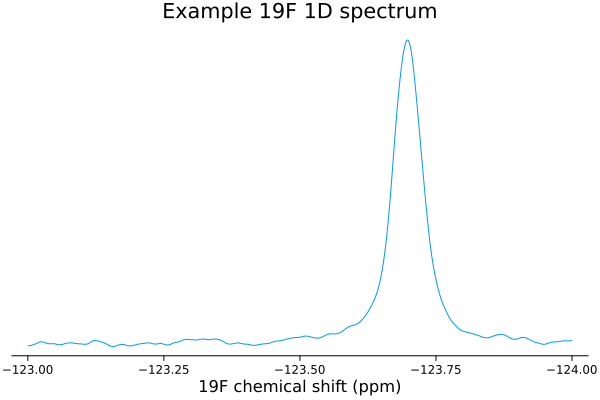
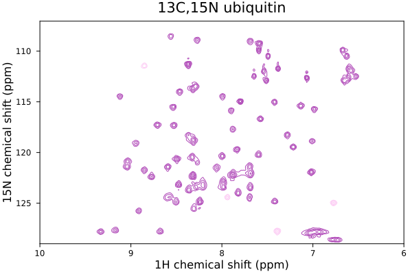
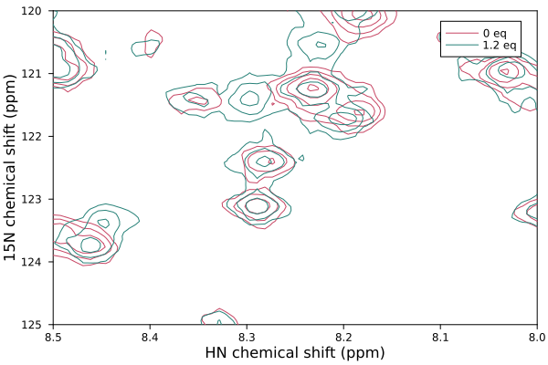
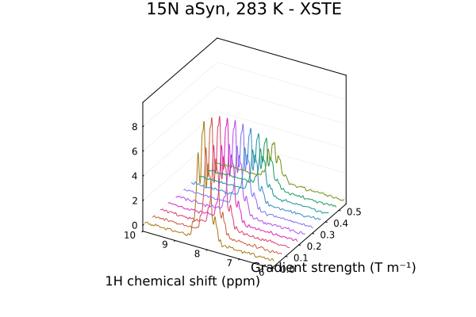
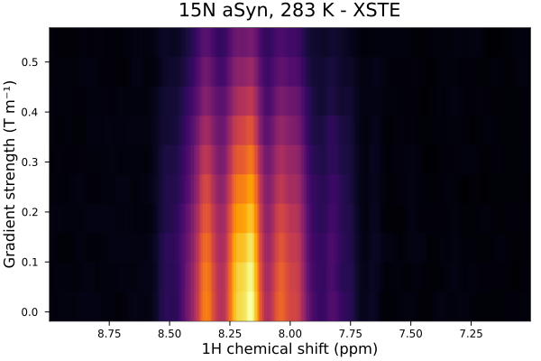

Plotting
NMRTools contains recipes for plotting common types of spectra, using the Plots package.
Plotting a 1D spectrum
Let's load and plot an example 1D 19F spectrum, using the loadnmr and plot commands:
using NMRTools, Plots
spec = loadnmr("../../exampledata/1D_19F/1")
plot(spec)
By default, plots are titled using the label generated when the data are loaded, which in turn comes from the first line of the title file. Titles can be removed by specifying title="" in the plot command (and the title can be changed in the same manner).
The plot colour can also be modified, by specifying e.g. c=:black in the plot command.
plot(spec, title="", c=:black)
Zooming in / setting plot limits
The plot range can be set using the usual xlims argument or command, e.g. passing xlims=[-124,-122] as an option to the plot command.
Alternatively, the region of the spectrum can be selected before plotting, by using the NMRTools .. selector.
plot(spec[-124 .. -123])
There are two advantages of this approach. If xlims are set, the y axis will be scaled to fit the entire spectrum, including regions that are not actually displayed - this may not show your data at its best. If the data are selected before plotting, the y axis will be scaled according only to the selected region. Secondly, for large spectra, it may be quicker to plot only a subset of the data, and this can result in smaller figure sizes also.
Overlaying multiple 1D spectra
Multiple experiments can conveniently be loaded from a list of filenames using the map function.
# create a list of bruker experiment directories
filenames = ["../../exampledata/1D_19F_titration/1",
"../../exampledata/1D_19F_titration/2",
"../../exampledata/1D_19F_titration/3",
"../../exampledata/1D_19F_titration/4",
"../../exampledata/1D_19F_titration/5",
"../../exampledata/1D_19F_titration/6",
"../../exampledata/1D_19F_titration/7",
"../../exampledata/1D_19F_titration/8",
"../../exampledata/1D_19F_titration/9",
"../../exampledata/1D_19F_titration/10",
"../../exampledata/1D_19F_titration/11"]
spectra = map(loadnmr, filenames)This creates a list (Vector) of NMRData containing the individual spectra. To plot this series of spectra, we can simply pass the list of spectra to the plot function:
plot(spectra, xlims=(-125, -122))
By default, spectra are normalized according to the number of scans and receiver gain determined automatically from the spectrum metadata; this can be disabled with the normalize=false option
Legends are produced from the first line of the spectrum title file. The legend can be disabled using the legend=nothing option. To re-label a spectrum, use label!(spectrum, "new label") (or for a list of experiments, the i-th spectrum can be relabelled with label!(spectra[i], "new label")).
Stacked views can also be produced using the vstack=true option. By default, spectra are normalized according to the number of scans and receiver gain determined automatically from the spectrum metadata
plot(spectra, xlims=(-125, -122), vstack=true, legend=:topright)
Plotting 2D spectra
2D spectra can be loaded and plotted in the same way as for 1D experiments:
# load a bruker experiment
spec2d = loadnmr("../../exampledata/2D_HN/1")
plot(spec2d)
As for 1Ds, plots are titled using the label generated when the data are loaded. Positive and negative contour levels are generated starting from five times the noise level.
The most convenient way to adjust the contour levels is simply to multiply or divide the spectrum by a scaling factor - the noise level stored within the spectrum metadata is not updated and so the contour levels will change accordingly.
The plot colour can also be modified, by specifying e.g. c=:purple in the plot command. The hue of the requested colour will be used to generate two shades, for positive and negative contours.
plot(spec2d/3, c=:purple, xlims=(6,10))
Spectra can also be plotted in other formats, e.g. heatmaps:
heatmap(spec2d[8 .. 8.5, 120 .. 125], cbar=:right, cbtitle="SNR")
Overlaying multiple 2D spectra
Multiple 2D experiments can conveniently be loaded from a list of filenames using the map function.
# create a list of nmrPipe-processed experiments
filenames = ["../../exampledata/2D_HN_titration/1/test.ft2",
"../../exampledata/2D_HN_titration/2/test.ft2",
"../../exampledata/2D_HN_titration/3/test.ft2",
"../../exampledata/2D_HN_titration/4/test.ft2",
"../../exampledata/2D_HN_titration/5/test.ft2",
"../../exampledata/2D_HN_titration/6/test.ft2",
"../../exampledata/2D_HN_titration/7/test.ft2",
"../../exampledata/2D_HN_titration/8/test.ft2",
"../../exampledata/2D_HN_titration/9/test.ft2",
"../../exampledata/2D_HN_titration/10/test.ft2",
"../../exampledata/2D_HN_titration/11/test.ft2"]
spectra2d = map(loadnmr, filenames)As for 1D experiments, these can be plotted, with automatic normalisation for varying numbers of scans and receiver gain, simply by passing the list of spectra to the plot function:
plot(spectra2d, legend=:topleft)[ Info: plotting vector of 2D NMR data (normalize = true)
A gradient of colours will automatically be generated when spectra are plotted in this way, and a legend generated from spectrum labels.
It is recommended to plot a series of 2Ds by passing a list of spectra in a single plot call, rather than adding them to a plot one-by-one using the plot! command. This will ensure consistent normalisation between experiments. Otherwise, contour levels will be calculated independently as five times the noise level in each experiment.
As usual, plot limits can be adjusted with the xlims and ylims options:
plot(spectra2d[[1,6]], xlims=(8,8.5),ylims=(120,125))[ Info: plotting vector of 2D NMR data (normalize = true)
Plotting pseudo-2D data
Plot recipes are available for pseudo-2D data like diffusion, relaxation or kinetics.
# load a diffusion measurement, processed in topspin using xf2
diffusiondata = loadnmr("../../exampledata/pseudo2D_XSTE/1/")
# set the gradient strengths - which varied from 2% to 98% of the max, over 10 points
diffusiondata = setgradientlist(diffusiondata, LinRange(0.02, 0.98, 10))
# generate a 3D plot of the data
plot(diffusiondata, xlims=(6,10))┌ Warning: a maximum gradient strength of 0.55 T m⁻¹ is being assumed - this is roughly correct for modern Bruker systems but calibration is recommended
└ @ NMRTools.NMRBase ~/work/NMRTools.jl/NMRTools.jl/src/NMRBase/nmrdata.jl:257
By default, the plot command will generate a 3D plot for pseudo-2D experiments. Heatmaps can also be generated using the heatmap command. In this example, we have selected the range to plot directly, rather than using the xlims option.
heatmap(diffusiondata[7..9,:])
Saving plots
All plots can be saved as high quality vector graphics, or as png files, using the savefig command.
savefig("myspectrum.pdf")
savefig("myspectrum.svd")
savefig("myspectrum.png")